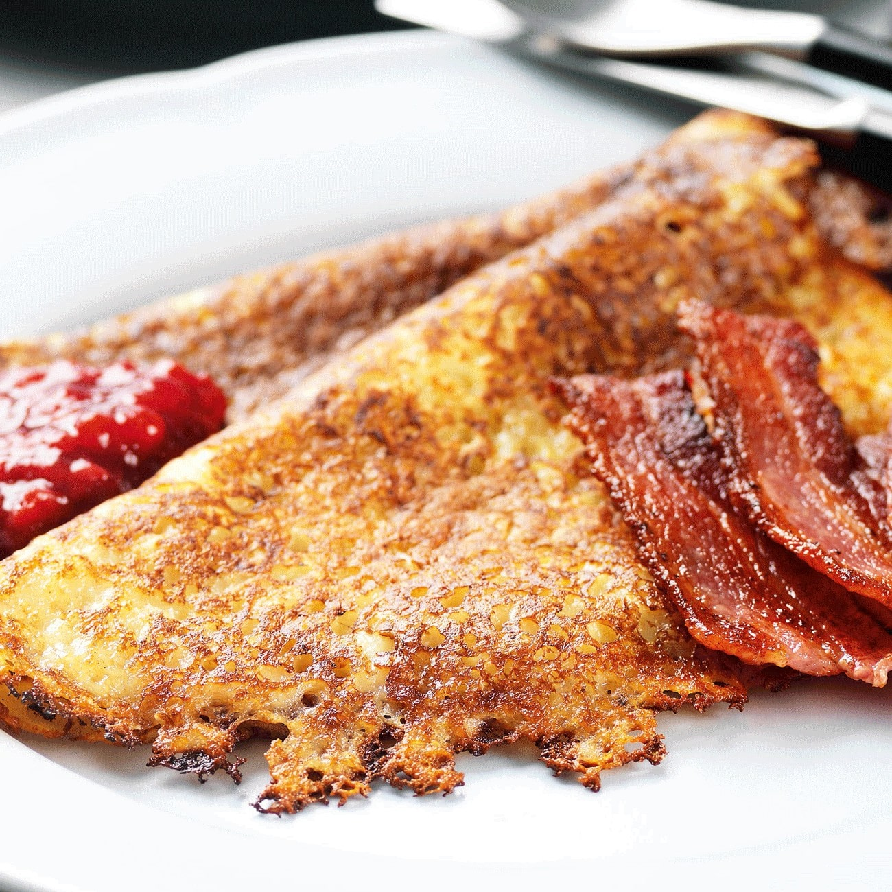

- 1 Potatis
- 1 Morot
- 2 Ägg
- 2 dl Mjölk
- 2 dl Mjöl
- Salt
- 0.5 Paket Bacon
Du behöver:
Raggmunkar
(1 portioner)
1. Skala och riv potatisen och moroten grovt
2. Rör samman ägg, mjölk, och mjöl till en smet
3. Tillsätt salt
4. Häll i potatis och morötter i smeten
5. Klicka ut smet (ca. 0.5-1 dl per raggmunk) i en stekpanna och stek i smör tills raggmunkarna fått fin
färg på båda sidor
6. Stek bacon och ät tillsammans med raggmunk
Källa: Studentköket - Budget (s.110)